Sets and systems
Alignments, called plays, and the rule-based offenses that run without a call.
All families · 15 terms · 13 full, 1 partial, 1 short
4-on-3
The advantage behind a trap: four attackers against the three defenders who did not trap.
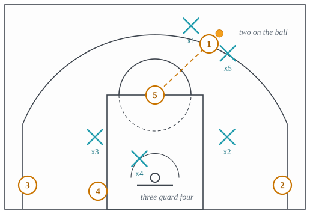
Why it is run. Two defenders on the ball leaves three to guard four; the weak-side low man cannot cover the dunker spot and the corner at once, and the pass out of the trap goes to whichever he leaves.
What beats it. Rotations quick enough to cover four spots with three men until the trap recovers, and a trap timed so the shot clock does the rest.
Delay
Also: 5-out delay
An early-offense alignment with the big at the top holding the ball and the four others spaced, from which he hands off, screens or reverses.
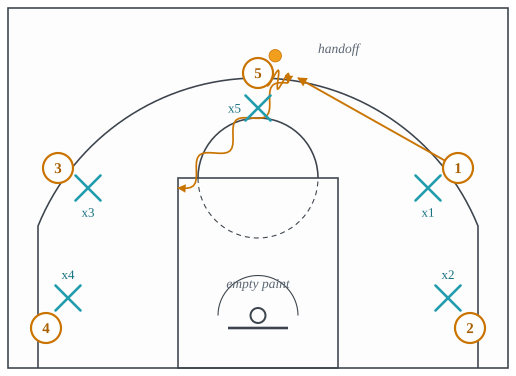
Why it is run. With the big holding the ball at the arc and nobody in the paint, his defender must choose between guarding him twenty-five feet out and protecting a rim nobody is near; either choice opens the handoff or the drive.
What beats it. The big’s defender guarding him at the arc and denying the handoff, or the defense switching every handoff so no cutter gets the ball moving.
Dribble drive motion
Also: DDM, dribble drive
A spread offense with no post player in the lane, built on driving gaps and kicking out or dropping off when the help comes.
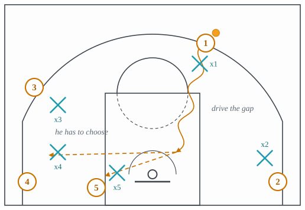
Why it is run. With the lane empty and the big in the weak-side dunker spot, a drive into a double gap forces one help defender to choose between the rim and the corner, and the pass goes to whoever he left.
What beats it. Guarding the drive with one man and never helping, which needs defenders who stay in front, or walling off the middle and conceding the pull-up.
Flex offense
Also: flex cut
A continuity offense whose repeating unit is a baseline cross screen followed by a down screen for the screener.
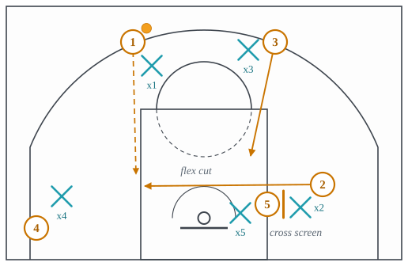
Why it is run. A cross screen and a down screen for the screener return the floor to its own starting shape, so the sequence can run again until one defender is late.
What beats it. Switching both screens, which is available to a team of similar-sized players, or going under the cross screen every time and living with the seal.
Flow offense
Offense that runs continuously from transition into half-court actions without a called play, governed by rules for who screens and who spaces.
Horns
An alignment with two bigs at the elbows, two shooters in the corners and the ball at the top.
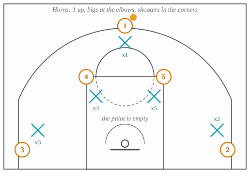
Why it is run. Two bigs at the elbows and two shooters in the corners empties the paint, puts two screeners one pass from the ball, and makes several different plays look identical for the first two seconds.
What beats it. Switching everything, which removes the screens and concedes the mismatches, or a big at the level of the ball screen with the low man tagging the roller.
Isolation
Also: iso
Clearing a side so one player can attack one defender.
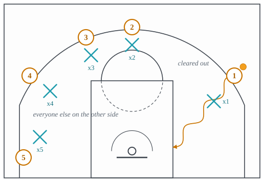
Why it is run. When one attacker beats one defender by himself, the best use of the other four is to stand where their defenders cannot help.
What beats it. A defender who stays in front; or sending a second defender early and living with the pass out.
Mismatch
A matchup the offense can exploit, such as a big guarding a guard on the perimeter or a guard guarding a big in the post.
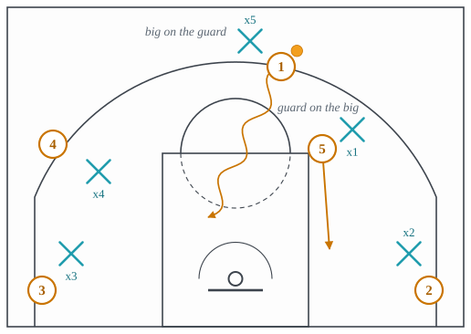
Why it is run. A switch leaves a big on a guard or a guard on a big, and both halves are attackable: the guard drives the slower man, the big posts the smaller one.
What beats it. The scram switch, switching back at the first dead ball, or a roster similar enough in size that no switch creates one.
Motion offense
Offense run from rules rather than a script, where players read the defense and cut or screen accordingly.
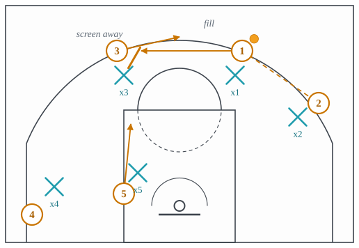
Why it is run. Rules attached to the pass produce screening and cutting continuously, so the defense must guard correctly every time, and the offense needs no call and can be run at any tempo.
What beats it. Switching everything, which turns every screen into a non-event and dares the offense to win one-on-one; or physical denial of the first pass.
Pistol
Also: 21, Nash action
An early-offense entry where the guard passes ahead to the wing and follows the pass into a handoff or a quick ball screen.
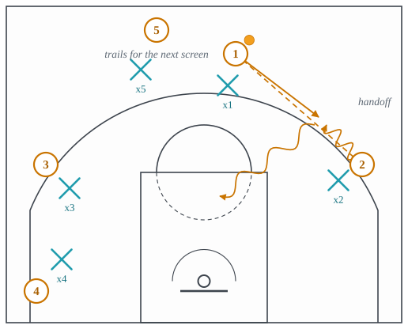
Why it is run. Passing ahead and following the pass turns the best ball-handler’s defender’s one relaxed step into a handoff taken at speed toward the middle, with a big’s screen already coming.
What beats it. Switching the handoff, or top-locking the guard so he cannot follow his pass.
Princeton offense
A read-based offense built on a high-post entry, back cuts against overplay, and screens away from the ball.
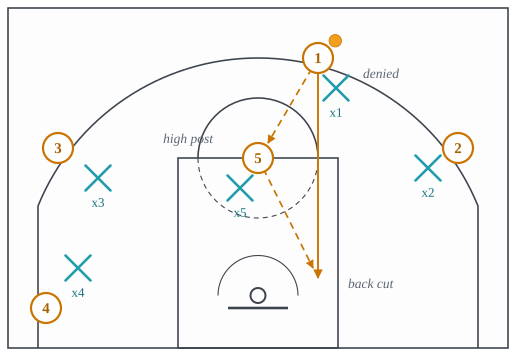
Why it is run. The high post passes and every denial becomes a back cut, so a defense that presses the perimeter gives up layups and a defense that sags gives up the catch.
What beats it. Refusing to deny: play a step off, concede the perimeter catch and take away the cuts, so the offense has to shoot over a set defense.
Read and react
A conceptual offense where every off-ball player has a rule for each thing the ball does.
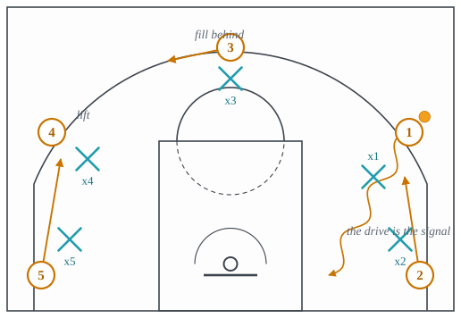
Why it is run. Every player has a reaction to the drive, executed before the drive resolves, so the three outlets are already moving when the help commits.
What beats it. A defense that never helps, so no reaction is triggered; or shrinking the floor so every drive is into a single gap.
Set play
A scripted sequence run to get a particular shot for a particular player.
Why it is run. Five players know what is coming and the defense does not; the cost is three or four seconds of setup during which the defense gets organized, which is why teams run them after timeouts, for a specific player, and at the end of a period.
Triangle offense
Also: triangle
A continuity offense built on a triangle of three players on one side of the floor, post, wing and corner, with the other two on the weak side.
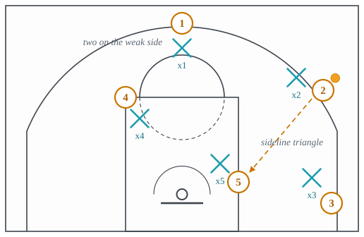
Why it is run. The triangle puts three players within one pass of each other on the strong side with a post entry at its hub, so every catch has a read built into it; the two on the weak side are far enough away that their defenders cannot help without leaving a cutter.
What beats it. Denying the post entry so the triangle has no hub, and fronting or three-quartering the post so the wing’s pass has to go over the top.
Zipper
A player cutting from the block straight up the lane line off a down screen to catch at the top.
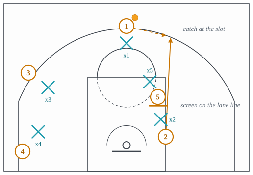
Why it is run. A cut straight up the lane line off a screen delivers the catch at the slot with the whole floor in front of the catcher, and usually straight into a ball screen from the man who just screened.
What beats it. Top-locking the cutter so he cannot come up the lane line, conceding the back cut, or switching the screen.